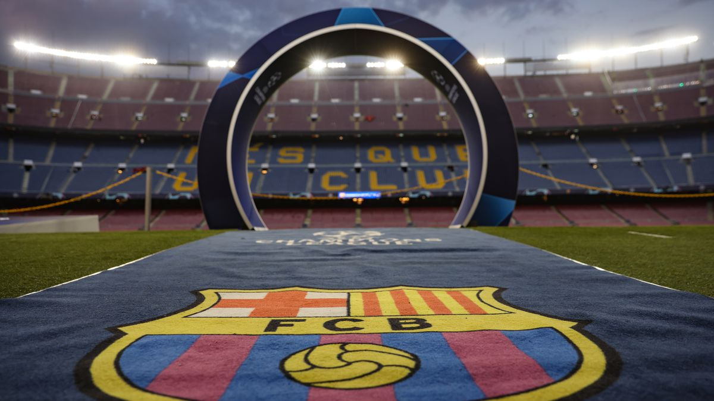

Welcome to FCBarcelona.live! The purpose of this website is to educate everybody a little bit more on one of the best, and most decorated football, or soccer, clubs in the world. You will be able to learn about the history of the club, watch some historical highlights, as well as meet the current first team players!
